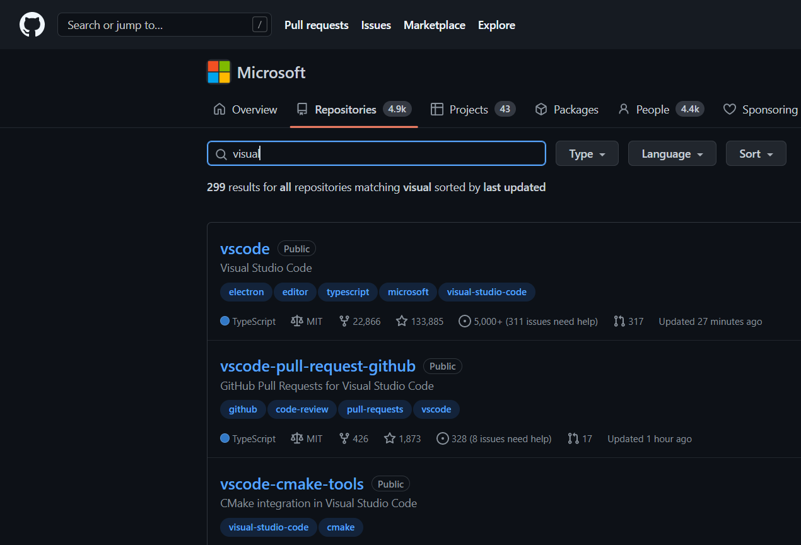
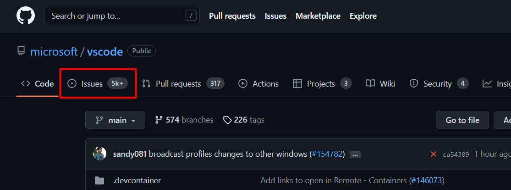
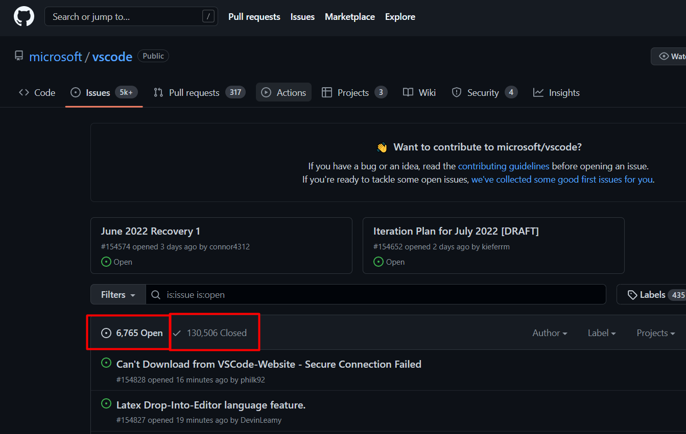
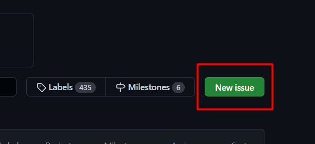
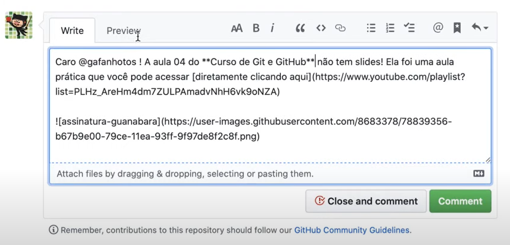
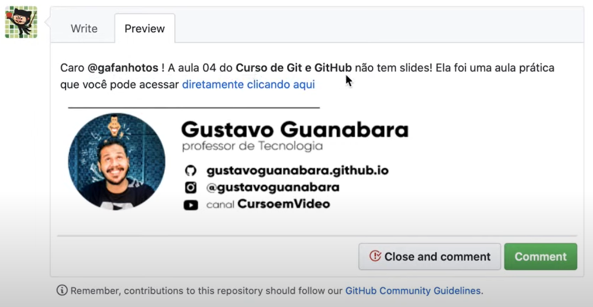

Issues é um problema, uma questão, um levantamento de alguma questão. É utilizada no GitHub para informar e ajudar a solucionar qualquer tipo de problema com algum projeto.
Participando de Issues
Descobrir um problema de um projeto
Entrar no repositório GitHub do projeto
Procurar nas Issues existente se já existe um tópico do mesmo problema
Já existe?
Aprender a resolver se já foi solucionado
Dar a sua contribuição para solucionar
Não existe?
Criar uma issue nova relatando o problema

Pesquisar o repositório do projeto

Pesquisar nas Issues se já existe um tópico tratando do seu problema

Verificar tópicos abertos e fechados. Se encontrou basta interagir

Se não encontrar o seu problema, basta criar uma nova issue


Lembre sempre de usar as ferramentas disponíveis para interagir, como: negrito, links, imagens, etc...
Gerenciar Issues
Caso a Issue seja sua, você pode:
Fechar issue após a solução do problema (marcar como resolvido)
Caso o repositório seja seu, você pode:
Trancar para novos comentários e selecionar o motivo